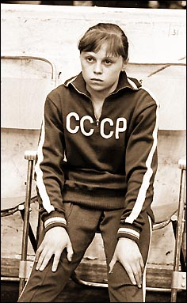

Elena Mukhina (USSR)
1978 World AA Champion
1977 and 1979 European UB Champion
|
Medal Total
"I think Mukhina
deserves the [IOC] award more than anybody else. A grave injury deprived
her of the opportunity of competing but it did not deprive her of courage.
I was delighted to hear her say that she definitely intends to remain in the
Olympic movement."
|
 |
Elena was born on June 1, 1960, in Moscow. Her father left the family when she was very young and her mother died a short time later, and Elena was raised by her grandmother. She loved watching figure skating and gymnastics on TV, so when a coach came to her school class and asked if anyone wanted to learn gymnastics, Elena raised her hand. Her first coaches were Alexander Eglit and Sofia Muratova (3rd AA at the 1956 Olympics). On December 28, 1974, Mikhail Voronin took over and within a few years had her performing some of the most difficult skills of the time.
Elena's "signature" move was a full-twisting Korbut salto on the uneven bars; she was also one of the first women to perform a full-in salto on the floor. After winning the World title in 1978, Elena fought off injuries and was never able to repeat her 1978 success. She broke a leg in 1979 and was forced back into training before the leg had fully healed. An operation was necessary to repair the bone. Tragically, she was paralyzed during a training session just prior to the 1980 Olympics. She was given a two-room apartment in Moscow after her accident. With the help of teachers and classmates who came to her apartment to tutor her, she graduated from the Moscow Institute o Physical Education in the summer of 1984. She died on December 22, 2006.
Competition Results
1980
USSR Cup: 14th AA
This page was last updated on February 14, 2026.
© Gymn Forum